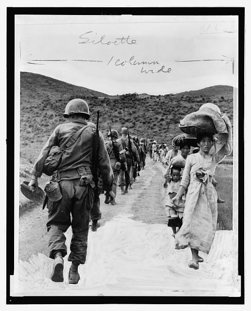
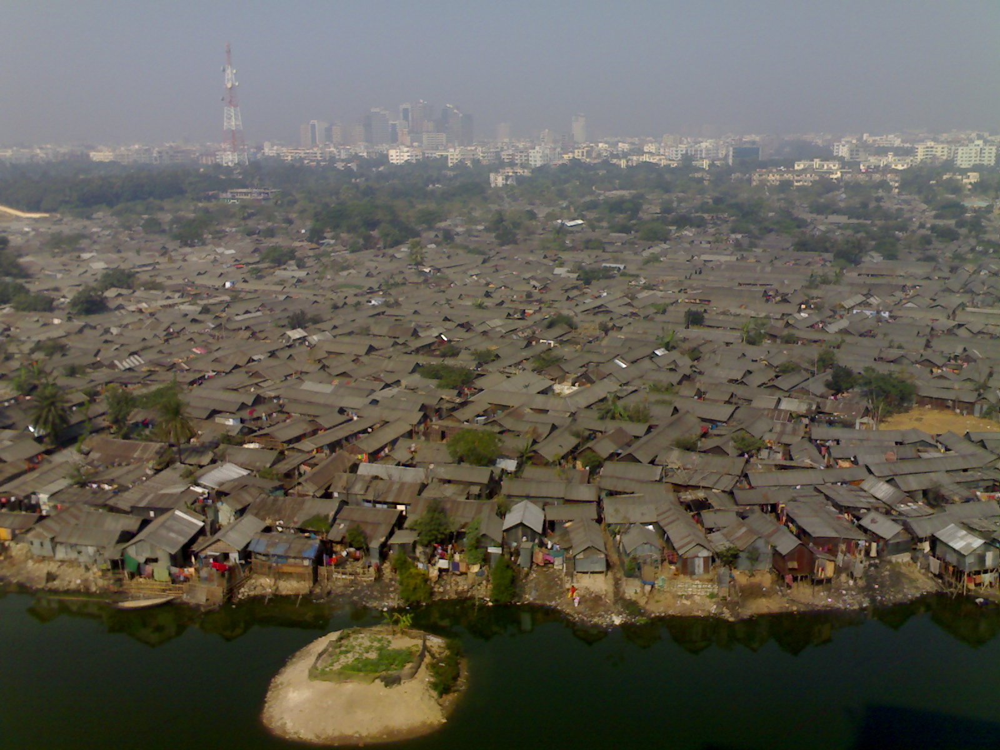

132,000
Wisconsinites who served in the Korean War




11. GDP Is a Bad Map

Havana
$12,300
GDP per capita (PPP)

Dhaka
$7,500
GDP per capita (PPP)

Pyongyang
$1,700
GDP per capita (PPP)
The lowest GDP produces the most impressive-looking capital. A command economy can concentrate everything into one showcase city. GDP measures aggregate output, not visible reality.